Kek - Pasta Tarifleri
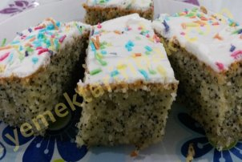
Kullanılan Malzemeler
Keki için:
3 adet yumurta
1 su bardağı şeker
1 su bardağı sıvı yağ sıvı yağ
1 su bardağı süt
1 su bardağı irmik
1 su bardağı haşhaş
2 su bardağı un
2 paket kabartma tozu
Şerbeti için:
1 su bardağı suya 1 su bardağı şeker
Üzeri için:
1 paket kremşanti
Haşhaşlı Pasta Yapılışı
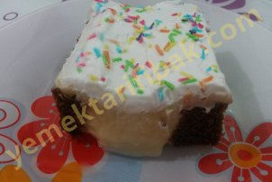
Kullanılan Malzemeler
Kek için:
3 yumurta
1 su bardağı toz şeker
1 su bardağı süt
1 su bardağı sıvıyağ
2 yemek kaşığı dolusu kakao
1 paket kabartma tozu
1 paket vanilya
2 su Bardağı un
Krema malzemeleri
4.5 su bardağı süt
1 su bardağı un
1 su bardağı şeker
2 yemek kaşığı tereyağı
1 portakal kabuğu
1 paket vanilya
Ayrıca: 1 Poşet krem şanti
Süslemek için renkli şeker
Krema Dolgulu Kek Yapılışı
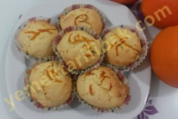
Kullanılan Malzemeler
1 adet yumurta
1 adet portakalın suyu
1 adet portakal kabuğu rendesi
1 su bardağı şeker
1 paket vanilya
yarım paket margarin
1 paket kabartma tozu
Yeteri kadar un
Portakallı Cupcake Yapılışı
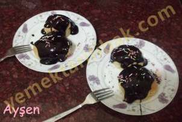
Kullanılan Malzemeler
Profiterol Hamuru için
1 su bardağı su
1 su bardağı un
125 gr margarin
3 adet yumurta
Kreması için
2,5 su bardağı süt
3 yemek kaşığı un
1,5 çay bardağı şeker
1 adet yumurta
1 paket vanilya
Üzeri için
1 paket hazır çikolata sosu..
Çikolatalı Profiterol Yapılışı
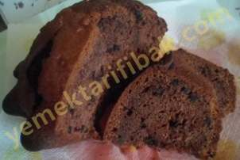
Kullanılan Malzemeler
3 yumurta
1 su bardağı şeker
1 su bardağı sıvı yağ
1 su bardağı ılık süt
2 yemek kaşığı kakao
3 yemek kaşığı damla çikolata
1 paket kabartma tozu
Kakaolu Damla Çikolatalı Kek Yapılışı
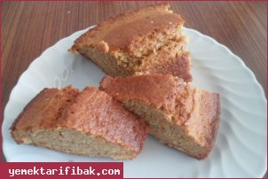
Kullanılan Malzemeler
3 yumurta
1,5 su bardak şeker
1 bardak süt
2 adet havuç
1 su bardağı çekilmiş fındık veya ceviz
2 paket kabartma tozu
1 paket vanilya
1 çay kaşığı tarçın
yeteri kadar un
1 bardak sıvı yağ
Havuçlu Tarçınlı Kek Yapılışı
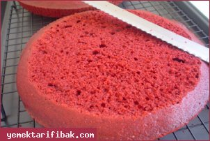
Kullanılan Malzemeler
Buttermilk için ;
1,5 su bardağı süt
1,5 yemek kaşığı elma sirkesi
Kek için ;
3 yumurta
2 su bardağı toz şeker
1 su bardağı sıvıyağ ya da 120 gr. tereyağ
1,5 su bardağı kek un
1 su bardağı un
1 çay kaşığı karbonat
1 paket vanilya
1 tatlı kaşığı kırmızı jel gıda boyası
2 tatlı kaşığı toz kakao
1 yemek kaşığı elma sirkesi
1 tutam tuz
krema için ;
500 gr. labne peyniri (suyunu süzün)
50 gr tereyağı
1 paket toz krem şanti
2 çay bardağı pudra şekeri
Kırmızı Kadife Kek Yapılışı
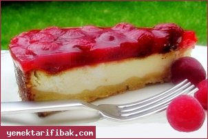
Kullanılan Malzemeler
Tart hamuru;
1 yumurta
100 gr. Tereyağı (oda ısısında)
3 çorba kaşığı şeker
2 su bardağı un
1 çay kaşığı kabartma tozu
Üzeri için 1. Karışım;
Yarım kg. yoğurt
250 gr. Tatlı lor
Yarım kg. süt.
Üzeri için 2. Karışım;
2 yumurta
1 çay bardağı sıvıyağ
1 su bardağı tozşeker
1 paket vanilyalı puding
Vişneli kat;
2 su bardağı vişne suyu
5 çorba kaşığı şeker
2 çorba kaşığı nişasta
Vişne Soslu Kek Yapılışı
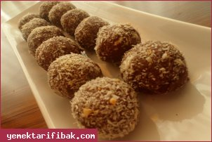
Kullanılan Malzemeler
1 Paket Bisküvi
2 Yemek Kaşığı Kakao
1 Yemek Kaşığı Nesquik
50 gr Margarin
Yarım Su Bardağı Süt
Hindistan Cevizi Veya Pudra Şekeri
Bisküvili Toplar Yapılışı
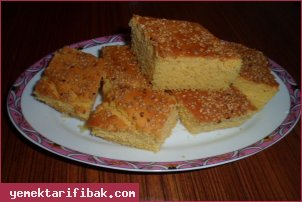
Kullanılan Malzemeler
3 yumurta
1 su bardağı şeker
1 su bardağı süt
1 su bardağı sıvıyağ
1 adet limon kabuğu
1 su bardağı un
2 su bardağı mısır unu
1 paket kabartma tozu
1 paket vanilya
susam
Mısır Unlu Susamlı Kek Yapılışı
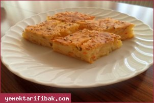
Kullanılan Malzemeler
2 yumurta
1 kase yoğurt
1 çay bardağı sıvı yağ
2 tane patates
1 tane havuç
1 tane soğan
bir tutam maydanoz veya dere otu
1 paket kabartma tozu
1 çay kaşığı tuz, kırmızı biber
alabildiği kadar un
Tuzlu Patatesli Kek Yapılışı
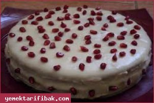
Kullanılan Malzemeler
1 paket vanilya
1 paket kabartma tozu
8 adet yumurta
6 su bardağı un
4 su bardağı toz şeker
2 su bardağı sıvıyağ
1 su bardağı ılık süt
Keki Islatmak İçin
1 su bardağı portakal suyu
3 yemek kaşığı Hindistan cevizi
Kreması İçin
4 su bardağı süt
1 yemek kaşığı mısır nişastası
2 yemek kaşığı mısır unu (veya normal un)
1 paket vanilya
1 adet yumurta
1 su bardağı şeker
Krem Şanti İçin
1 paket toz krem şanti
1 su bardağı soğuk süt
Kremalı Pasta Yapılışı
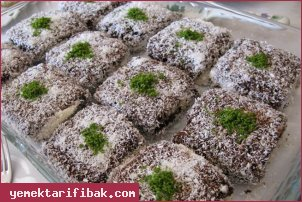
Kullanılan Malzemeler
Keki için:
3 adet yumurta
1 su bardağı toz şeker
1 çay bardağı süt
1 çay bardağı sıvıyağ(fındıkyağı kullandım)
1 paket kabartma tozu
2 su bardağı un
vanilya
Ara krema için:
Not: İsterseniz aşağıdaki krema ölçülerini azaltabilir ya da tam ölçü hazırlayıp kalan kremayı farklı bir şekilde değerlendirebilirsiniz.
1/2 litre süt
7 çorba kaşığı un
1 yumurta
6 çorba kaşığı şeker
1 paket vanilya
1 küçük paket labne peyniri
Sosu için:
1,5 su bardağı süt
3 çorba kaşığı toz şeker
3 çorba kaşığı kakao
Üzeri için:
Hindistan cevizi
Halley Pasta Yapılışı
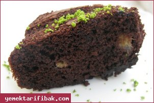
Kullanılan Malzemeler
4 adet yumurta
150 gr tereyağı
35 gr kakao
120 gr su
1 su bardağı pudra şekeri
1 paket kabartma tozu
2 adet büyük boy muz
un
üzeri için:
çikolatalı sos
glazür veya 150 gr erimiş çikolata
100 ml süt ile hazırlanmış sos
Çikolatalı Muzlu Kek Yapılışı
Diğer Tarifler